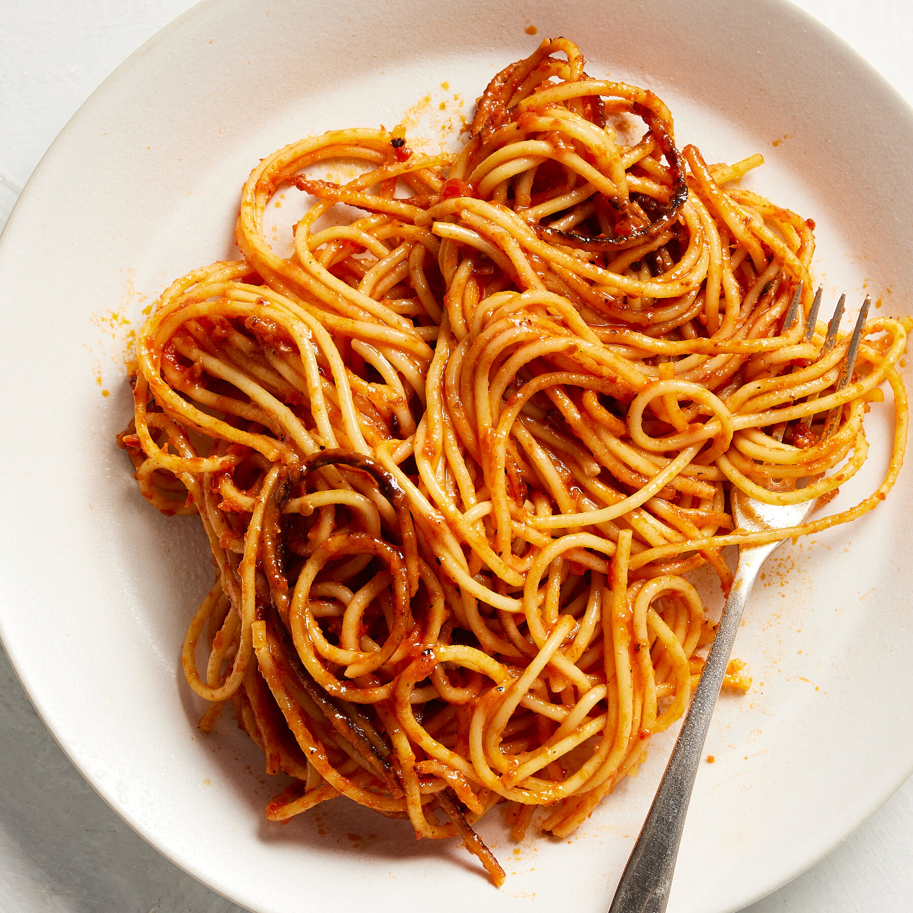

Spaghetti Recipe
A Simple yet Tasty Dish
This amazing spaghetti recipe is all you will need to impress your friends
By following these simple steps, you too can have resturant quality food at home!
Ingredients
- 1 Box of Spaghetti Noodles
- 1lb of ground beef
- 1 Tbsp of italian seasoning
- 1 24oz jar of your preffered sauce
- salt to taste
- shreeded parmesan cheese to garnish
Steps
- Fill tall pot half way with water , and some salt, and bring it to a boil
- Add spaghetti and following cooking times on box for desired doneness
- While the noodles cook, add your ground beef to a skillet and brown
- Once ground beef is cooked, add sauce and italian seasoning
- Bring meat mixture to a simmer
- Once the spaghetti is done, drain and return back to pot
- Add meat mixture to spaghetti. Stir
- Plate and garnish with parmesan cheese